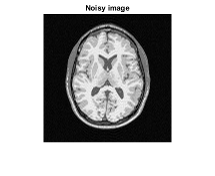
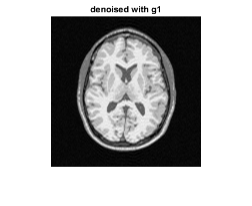
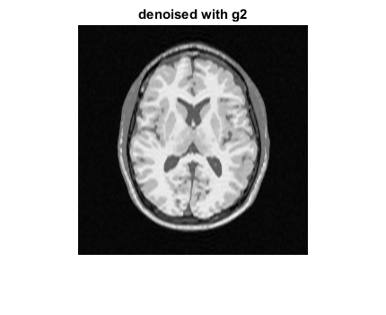
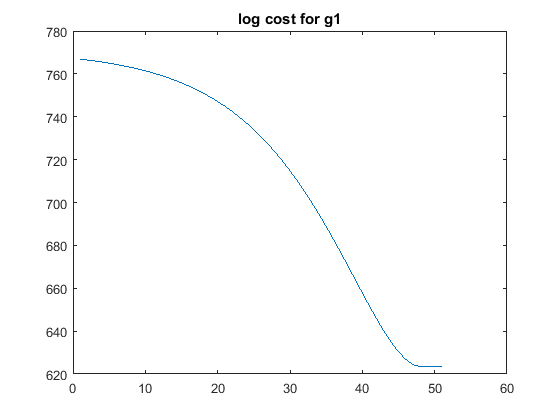
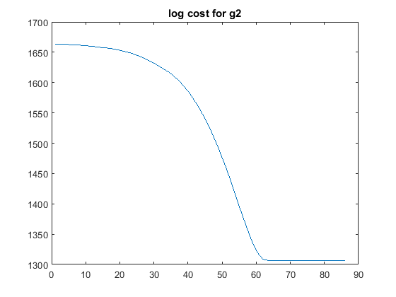
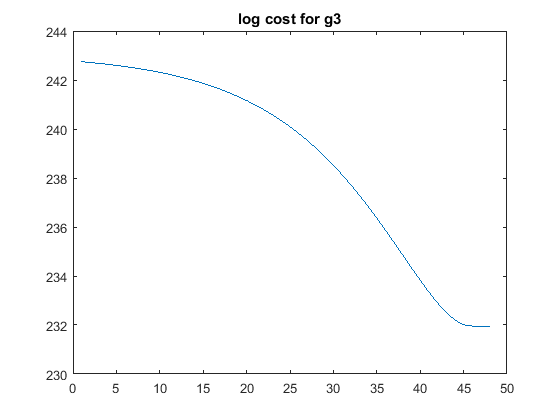

Contents
% CS 736: Assignment 3 % 19th March 2016
Loading the data
clc; clear; close all; load('../data/assignmentImageReconstructionBrain.mat'); xInit = ifft2(imageKspaceData); % Initial solution in gradient descent
Using quadratic function prior
close all g = @(x) QuadraticFunction(x);
alphaRange1 = [0.99970:0.00002:0.99995]; rrmse1 = zeros(length(alphaRange1),1);
for i=1:length(alphaRange1) alpha = alphaRange1(i);
[x,logCost,iters] = GradientDescent(xInit,imageKspaceData,g,100,alpha,imageKspaceMask);
figure()
imshow(abs(x))
str = sprintf('alpha = %f',alpha);
title(str)
saveas(gcf,strcat('../results/g1/',num2str(i),'.png'));end
% ** Evaluating for optimum params ** alpha1 = 0.99986; % obtained by using the commented code above for optimization g = @(x) QuadraticFunction(x); [x,logCostArray,iters1] = GradientDescent(xInit,imageKspaceData,g,100,alpha1,imageKspaceMask); x1 = abs(x); logCost1 = logCostArray(1:iters1);
Using Huber function prior
close all alphaRange2 = [0.99975:0.00003:0.99990]; lambdaRange2 = [0.05:0.03:0.15];
for i=1:length(alphaRange2) for j=1:length(lambdaRange2) g = @(x) HuberFunction(x,lambdaRange2(j)); alpha = alphaRange2(i);
[x,~,~] = GradientDescent(xInit,imageKspaceData,g,100,alpha,imageKspaceMask);
figure()
imshow(abs(x))
str1 = sprintf('alpha = %f',alpha);
str2 = sprintf('lambda = %f',lambdaRange2(j));
title(strcat(str1,str2));
saveas(gcf,strcat('../results/g2/',num2str(i+(j-1)*length(alphaRange2)),'.png'));
end
end% ** Evaluating for optimum params** lambda2 = 0.05; alpha2 = 0.99975; % obtained by using the optimization code above (commented) g = @(x) HuberFunction(x,lambda2); [x,logCostArray,iters2] = GradientDescent(xInit,imageKspaceData,g,100,alpha2,imageKspaceMask); x2 = abs(x); logCost2 = logCostArray(1:iters2);
Using g3() prior
close all; alphaRange3 = [0.99975:0.00004:0.99999]; lambdaRange3 = [0.12:0.01:0.22];
rrmse3 = zeros(length(alphaRange3),length(lambdaRange3));
for i=1:length(alphaRange3) for j=1:length(lambdaRange3) g = @(x) G3Function(x,lambdaRange3(j)); alpha = alphaRange3(i);
[x,~,~] = GradientDescent(xInit,imageKspaceData,g,100,alpha,imageKspaceMask);
figure()
imshow(abs(x))
str1 = sprintf('alpha = %f',alpha);
str2 = sprintf('lambda = %f',lambdaRange3(j));
title(strcat(str1,str2));
saveas(gcf,strcat('../results/g3/',num2str(i+(j-1)*length(alphaRange3)),'.png'));
end
end% ** Evaluating for optimum params
alpha3 = 0.99979;
lambda3 = 0.17;
g = @(x) G3Function(x,lambda3);
[x,logCostArray,iters3] = GradientDescent(xInit,imageKspaceData,g,100,alpha3,imageKspaceMask);
x3 = abs(x);
logCost3 = logCostArray(1:iters3);
Plotting
noisyImg = abs(xInit); % Finding the minimum and maximum value of the images for creating a colormap jointImage = [noisyImg(:); x1(:); x2(:); x3(:)]; minIntensity = min(jointImage); maxIntensity = max(jointImage); % #Printing# fprintf('\n'); disp('*Part 1) Quadratic funnction g1*'); disp(strcat('Best results obtained at alpha* = ',... num2str(alpha1))); fprintf('\n'); disp('*Part 2) Huber function g2*'); disp(strcat('Best results obtained at alpha* = ',... num2str(alpha2),' and lambda* =',num2str(lambda2))); fprintf('\n'); disp('*Part 3) function g3*'); disp(strcat('Best results obtained at alpha* = ',... num2str(alpha3),' and lambda* =',num2str(lambda3))); fprintf('\n'); % Scaling every image so that [min,max] maps to [0,1] noisyImg = (noisyImg-minIntensity)./(maxIntensity-minIntensity); x1 = (x1-minIntensity)./(maxIntensity-minIntensity); x2 = (x2-minIntensity)./(maxIntensity-minIntensity); x3 = (x3-minIntensity)./(maxIntensity-minIntensity); scale = linspace(0,1,250); cmap = repmat(scale',1,3); figure(5); imshow(noisyImg); colormap(cmap); title('Noisy image'); figure(6); imshow(x1); colormap(cmap); title('denoised with g1'); figure(7); imshow(x2); colormap(cmap); title('denoised with g2'); figure(8); imshow(x3); colormap(cmap); title('denoised with g3'); % Plotting cost functions figure(9); plot(logCost1); title('log cost for g1'); figure(10); plot(logCost2); title('log cost for g2'); figure(11); plot(logCost3); title('log cost for g3');
*Part 1) Quadratic funnction g1* Best results obtained at alpha* =0.99986 *Part 2) Huber function g2* Best results obtained at alpha* =0.99975 and lambda* =0.05 *Part 3) function g3* Best results obtained at alpha* =0.99979 and lambda* =0.17     